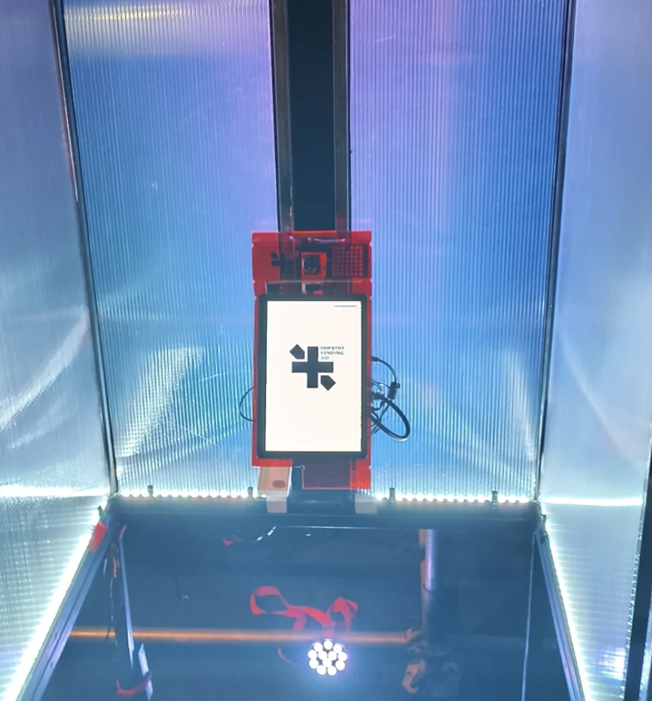
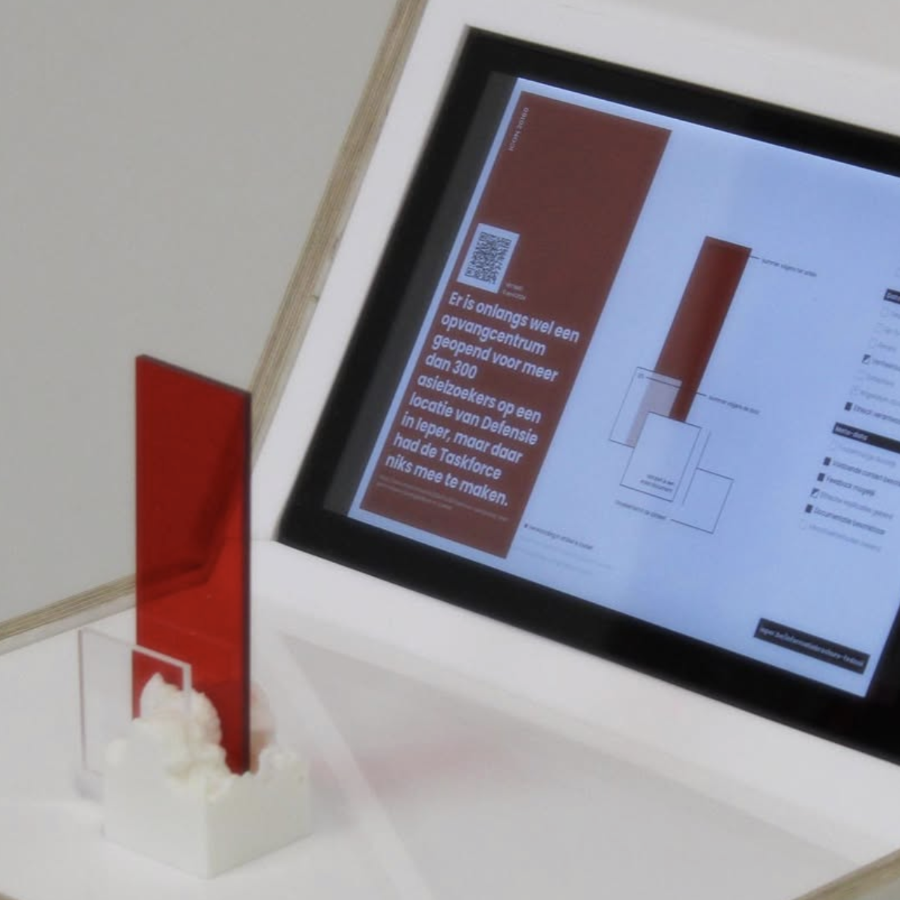
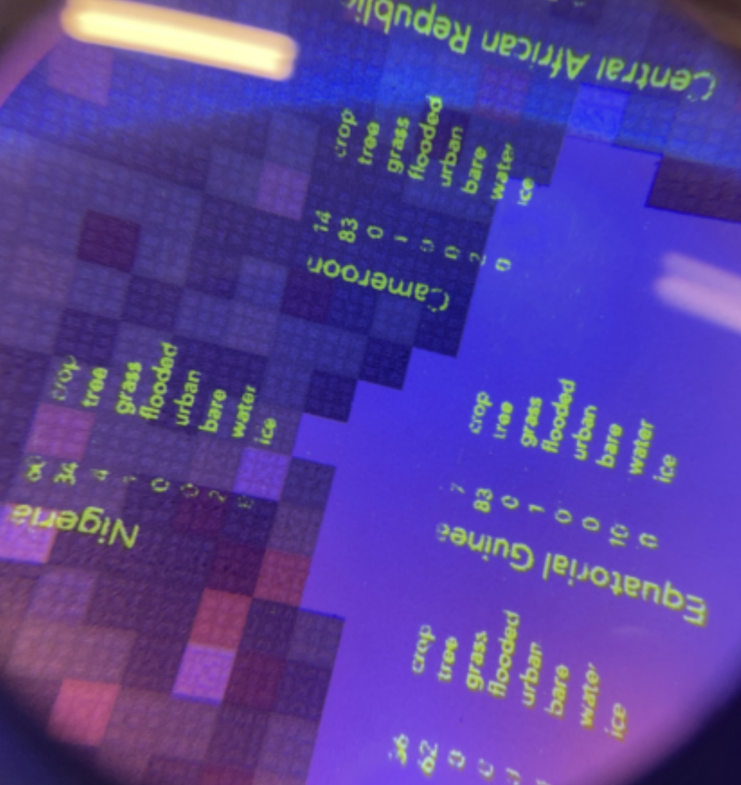

Notice
This is how the last visitor organised the website.
Feel free to re-organise. Hit SAVE if you feel like you've improved it.
The heatmap gives an idea where the element has resided. In the meanwhile, I'll insert projects and context as the studio grows.
Project
The Empathy vending aid reflects on the impact algorithmic feedback loops present in social media have on our ability to care. It proposes a way to sell empathy for actual money, forcing valuation of empathy.
Project
The Data Icon project evaluates factual information in media. Displaying the found data sources, alongside reported numbers with regards to their context. It offers a tangible way to explore data discrepancies in mainstream reporting.
Project
World Function Collapse uses data from the European Space Agency, to visualize shifts in land coverage across the world. The project pushes UV screenprinting to the absolute limits, allowing small scale exploration of large scale data.
Hi.
My name is Jan Everaert. This studio is my excuse to play with data, code, design and immersive experiences.
I like to make complex information and data tangible (tastbaar, in Dutch). Data visualizations, information experiences, and interactive exploration tools are what I do.
Besides being a lecturer at Earasmus College University Brussels, I co-founded CTRL+ALT, which makes interactive installations.
Research
I'm currently building courses on immersive experiences. All research done will be collected here.